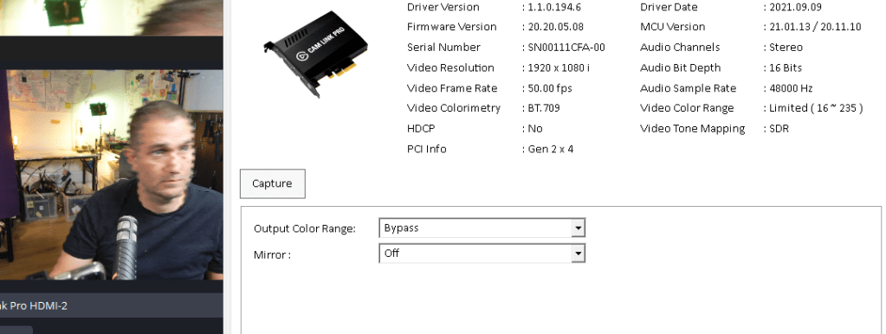
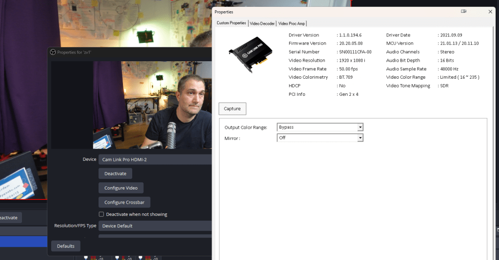
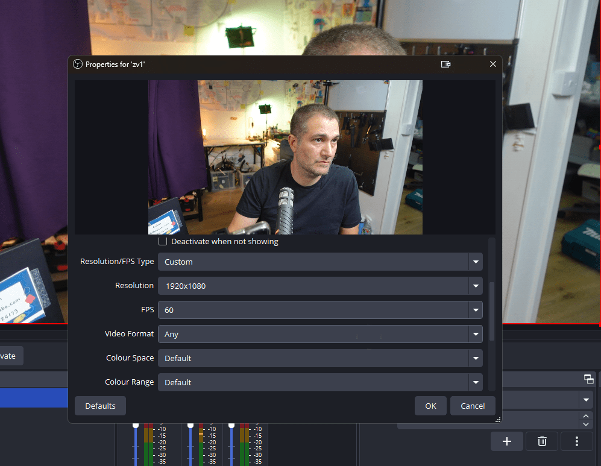
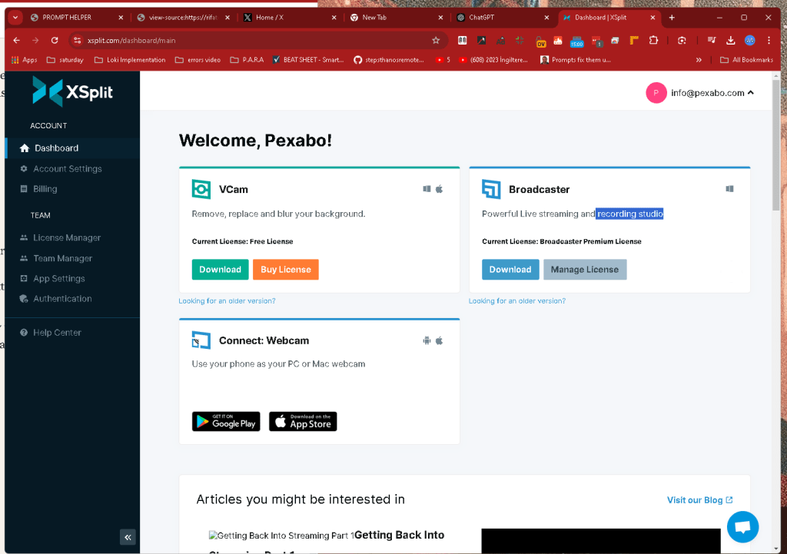
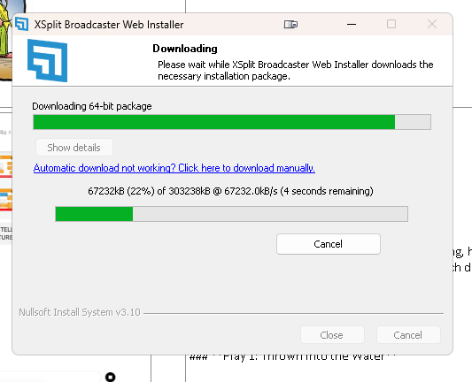
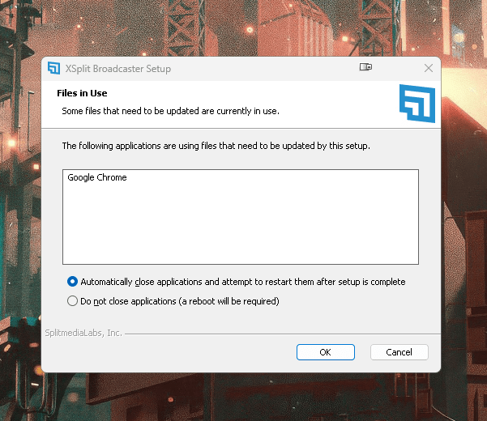

Frame Lines error with zv1 with movement
Move error

Stable

maybe this does not line up

If you're experiencing movement issues with your Sony ZV-1 camera while using OBS (Open Broadcaster Software), especially regarding frame rates or motion fluidity, there could be several causes. Here’s how to troubleshoot and fix them:
1. Check Camera Frame Rate & Resolution Settings:
-
Ensure that the ZV-1 is outputting at a compatible frame rate and resolution. For instance, if OBS is set to 30 FPS but your camera is outputting at 60 FPS (or vice versa), there could be a mismatch causing choppy or inconsistent motion.
-
Go into the ZV-1 settings and set the frame rate to 30 FPS or 60 FPS, depending on what you're aiming for in OBS.
2. USB Bandwidth and Latency:
-
If you're using a USB connection to capture video (e.g., using Sony’s Imaging Edge software or a capture card), make sure the USB port and cable support high-speed data transfer. Use USB 3.0 for best results.
-
USB hubs can also cause latency issues. Try connecting the ZV-1 directly to your computer without using a hub.
3. Capture Card Performance (If Applicable):
-
If you're using a capture card, ensure it supports the resolution and frame rate you’re targeting (e.g., 1080p60 or 4K30).
-
Check if the capture card is causing the issue by testing with another camera or video input.
4. OBS Settings:
-
Base (Canvas) and Output Resolution: Make sure these match the resolution of your ZV-1 output. For example, if the ZV-1 is set to output 1080p, your OBS canvas should be set to 1920x1080.
-
Frame Rate: Go to
Settings > Videoand make sure the FPS value in OBS matches what your camera is outputting (e.g., 30 or 60 FPS). -
Encoder Settings: Try lowering the encoder preset (in OBS, go to
Settings > Output > Streaming) from something like “fast” to “medium” or “slow” to reduce strain on your system if you're experiencing dropped frames.
5. Computer Resources (CPU/GPU):
- Check your CPU and GPU usage while streaming or recording in OBS. High usage can result in dropped frames and jittery video. Closing unnecessary programs or upgrading hardware might help if usage is too high.
6. Camera Power Settings:
- Ensure the ZV-1 isn’t going into a power-saving mode or overheating. Sometimes cameras limit performance under these conditions, which can affect motion and frame output.
7. OBS Video Capture Source Configuration:
-
In OBS, right-click on your camera’s capture source, go to
Properties, and ensure the resolution, frame rate, and buffer settings align with your camera’s output. -
Toggle the buffering option if you notice latency issues or stuttering.
By addressing these areas, you should see an improvement in how the ZV-1 performs with OBS, reducing issues with motion and frame rate.
Change
-
4k to 1080p
-
Close obs >>> move to xsplit ( having issues opening up )

reinstall

could not seeit
too integrated

Imported from rifaterdemsahin.com · 2024